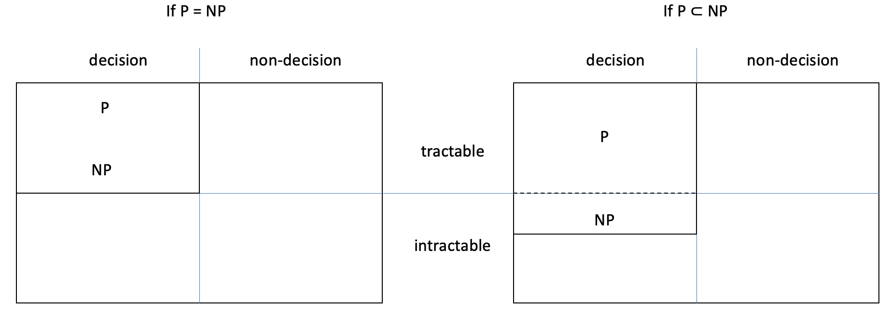

26.2. The P and NP classes
This section is about decision problems, i.e. those with a Boolean output. There are two major classes of decision problems, called P and NP. I will use the arguably most famous decision problem to introduce both classes.
26.2.1. SAT
Consider the Boolean expression ‘not (A or (B and C))’. Depending on the values of the three variables, the expression may be true or false. If A is true, then the expression is false, but if A and B are false, then the expression is true.
An interpretation is a set of assignments of a Boolean value to each variable. For example, the interpretations
{A = true, B = false, C = false}
{A = true, B = true, C = true}
make the expression false, while the interpretations
{A = false, B = false, C = false}
{A = false, B = false, C = true}
make the expression true. A Boolean expression with n variables has 2ⁿ different interpretations, because each variable has two possible values.
A Boolean expression is satisfiable if at least one interpretation satisfies the expression, i.e. makes it true. The expression ‘not (A or (B and C))’ is satisfiable, but ‘A and not A’ isn’t: neither {A = false} nor {A = true} makes the expression true. The satisfaction problem (also known as SAT) is the problem of deciding whether a given Boolean expression is satisfiable.
SAT can be solved with brute-force search: generate all possible interpretations for the input expression and evaluate the expression with each interpretation. If a candidate interpretation makes the expression true, stop searching and output true: the expression is satisfiable. Otherwise, output false after generating and testing all interpretations.
Testing one interpretation takes linear time: one pass over the expression to replace the variables with their values (as given by the interpretation) and one pass to evaluate the Boolean operators, each in constant time.
In the worst case, the search generates and tests all 2ⁿ interpretations to realise that none of them (or only the last one) makes the expression true. There are SAT algorithms that are quite efficient in the average case, i.e. for most Boolean expressions, but all known SAT algorithms have exponential worst-case complexity.
26.2.2. Class P
Class P is the set of tractable decision problems: those that can be solved in polynomial time. For example, the problem of deciding whether a given string is a valid password is in P, because a simple linear-time algorithm solves it.
As I mentioned before, for some problems like the TSP we don’t know if they’re tractable, and the same happens with some decision problems. For example, we don’t know whether SAT is tractable, i.e. if it’s in P or not, because while current SAT algorithms are exponential, there’s no proof that a polynomial algorithm for SAT can’t exist.
26.2.3. Class NP
If for some Boolean expression the output for the SAT problem is true, then we can verify in linear time that the expression is indeed satisfiable, provided we’re given an interpretation that satisfies the expression: we simply evaluate the expression with the interpretation to confirm it makes the expression true.
In more general terms, SAT is a decision problem with this property: for every input that leads to a true output (the decision is ‘yes’), we can provide some data that allows us to confirm the decision in polynomial time. Class NP is the set of all decision problems with this property.
Class P is the set of decision problems for which the ‘yes’ or ‘no’ decision can be computed in polynomial time; class NP is the set of decision problems for which a ‘yes’ decision can be checked in polynomial time.
The additional data to check the ‘yes’ decision is called a certificate because it certifies that the output must be true for that input. The polynomial algorithm that takes an input and its associated certificate to confirm the decision must be ‘yes’ is called the verifier. For each input for which the decision is ‘yes’, the certificate is the extra information needed to verify the decision.
To show that a decision problem is in NP, we must
define a certificate for each input that leads to a ‘yes’ decision
outline the verifier’s algorithm, explaining why it does confirm ‘yes’ decisions
justify that the algorithm has polynomial complexity.
Here’s how I would answer a TMA question asking to show that SAT is in NP:
If the output is true, the input is a satisfiable expression. The associated certificate is an interpretation that satisfies the expression.
The verifier takes an input expression and an interpretation, and evaluates the expression using the interpretation. If the expression evaluates to true, this confirms the expression is satisfiable because this interpretation makes the expression true.
If the expression has v variable occurrences and o Boolean operators, the verifier takes linear time in the size of the expression: Θ(v + o). It takes Θ(v) to replace the variables with the interpretation’s values and o×Θ(1) to evaluate the operators.
As a further example, consider the decision problem of whether a sequence has even length. It can be shown to be in NP:
The certificate is an integer: the length of the input sequence.
The verifier takes the list and its certificate and checks that the certificate is an even number that corresponds to the length of the sequence. This confirms that the sequence has even length.
The verifier takes constant time to check that the certificate is an even number, using the modulo operation. The verifier takes at most linear time to compute the length of the sequence and check it’s equal to the certificate.
Note that only checking if the certificate is an even number isn’t enough to confirm the list has even length: it could be that the certificate was incorrectly computed. The verifier is checking that a given input leads to a ‘yes’ decision, so the verifier can’t use only the certificate and ignore the input.
For this example we can produce certificates for all input sequences, not just those of even length, but in general you only have to indicate what the certificate is for each input leading to a true output.
Exercise 26.2.1
Alice has an extended lunch break during a conference. Can she walk around the city to see all the major landmarks and return to the hotel within 2 hours? Her problem is a particular case of the decision TSP:
Given a complete weighted graph and a positive integer w, does the graph have a tour with total weight less than or equal to w?
What is the certificate for a graph and integer that lead to a ‘yes’ answer?
Outline the verifier algorithm.
Explain why the verifier takes polynomial time.
26.2.4. P versus NP
When I proved that deciding whether a sequence has even length is an NP problem, you may have noticed that the certificate is redundant because the verifier computes the length of the sequence anyway. The verifier is in effect the decision algorithm: it computes the length and checks it is even.
Deciding if a sequence has even length is a tractable problem and so we can use its polynomial algorithm to confirm a ‘yes’ decision without really making use of the certificate.
The argument that every tractable decision problem is in NP goes as follows:
For every input, the certificate can be anything: zero, the empty set, the string ‘whatever’, etc.
The verifier algorithm takes an input and its certificate, ignores the certificate, calls the decision algorithm on the input and checks the output is true, to confirm it.
The decision algorithm (and therefore the verifier) takes polynomial time because the problem is tractable.
In summary, if a decision can be computed in polynomial time, then it can be verified in polynomial time. Therefore, every decision problem that is in set P is also in set NP.
Note: P ⊆ NP.
If P is a subset of NP, do we have P = NP or P \(\subset\) NP (and thus P ≠ NP)? The next figure shows both possibilities. I’ve added empty columns for non-decision problems to emphasise that classes P and NP are only about decision problems.
In the left-hand diagram, P and NP are the same set: the tractable decision problems. In the right-hand diagram, P \(\subset\) NP: NP includes P (as conveyed by the dashed line) and includes the intractable decision problems that can be verified in polynomial time. There are further intractable decision problems, outside class NP.
Which of these two possibilities is actually the case? Is every NP problem in P (and therefore P = NP) or are some NP problems not in P (and therefore P ≠ NP)? Asking if NP = P can also be phrased as: is every NP problem tractable? In other words, for every decision problem for which we can check the ‘yes’ decisions in polynomial time, can we also compute them in polynomial time?
This is known as the P versus NP problem or the ‘P = NP?’ question. It is literally a million-dollar question. Since 2000, the Clay Mathematics Institute has been offering one million dollars for a proof of P = NP or of P ≠ NP.
Info: You can find informal and formal descriptions of the problem, together with the rules for claiming the prize, on their website.
Here are two suggestions for how you can get a million bucks. (No need to thank me.)
To prove that P ≠ NP, you ‘just’ have to prove that one NP problem of your choice is intractable. Since all problems in P are tractable by definition, this would show that P and NP are not the same set of problems.
To prove P = NP, you ‘just’ have to invent a polynomial algorithm for SAT. I know, it sounds unbelievable that inventing an efficient algorithm for one particular problem proves that all the infinitely many NP problems can also be solved (not just verified) efficiently. As Tolkien might have noted if he had known about SAT: one problem to bind them all.
The next two sections will explain why a polynomial algorithm for SAT ‘unlocks’ polynomial algorithms for all NP problems. That’s why the P v. NP issue is so famous and significant, and why there’s a large bounty on an elusive algorithm or proof that settles the issue.
The majority of computer scientists believe that P ≠ NP, partly because no polynomial algorithm for SAT has been found in the past 50 years, since the study of the P v. NP question began. The key word in the previous sentence is ‘believe’, because there’s no certainty either way.